Veja todos os agentes do Counter-Strike 2
Durante os últimos tempos, a busca por agentes no CS2 aumentou muito e isso fez com que o preço disparasse em questão de meses. Apesar de não ter o mesmo prestígio de facas, luvas e armas, ter uma skin dessas não deixa de ser algo que os jogadores dispensam.
Os primeiros agentes foram trazidos juntos à operação Shattered Web, que foi lançada no dia 17 de novembro de 2019, em diversas classes diferentes. Desde então, a última adição de novos agentes ocorreu em setembro de 2021, totalizando mais de 1200 dias sem novas skins.
Confira a lista completa de agentes do CS2
Sir Bloody Miami Darryl
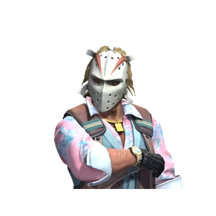O agente Sir Bloody Miami Darryl foi lançado durante a operação Broken Fang, integrando a classe The Professionals, em 2 de dezembro de 2020.
Sir Bloody Loudmouth Darryl
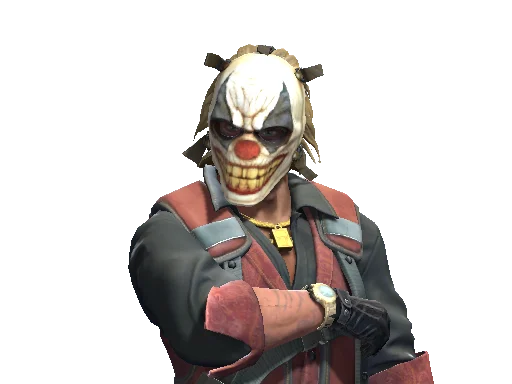O agente Sir Bloody Loudmouth Darryl foi lançado durante a operação Broken Fang, integrando a classe The Professionals, em 2 de dezembro de 2020.
Sir Bloody Darryl Royale
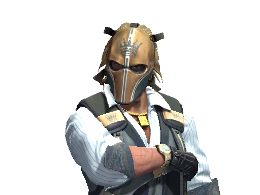O agente Sir Bloody Darryl Royale foi lançado durante a operação Broken Fang, integrando a classe The Professionals, em 2 de dezembro de 2020.
Sir Bloody Skullhead Darryl

O agente Sir Bloody Skullhead Darryl foi lançado durante a operação Broken Fang, integrando a classe The Professionals, em 2 de dezembro de 2020.
Bloody Darryl The Strapped
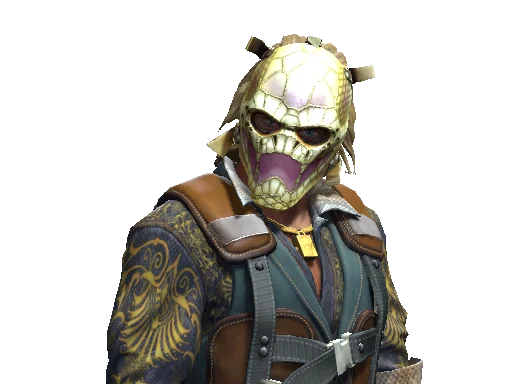O agente Bloody Darryl The Strapped foi lançado durante a operação Riptide, integrando a classe The Professionals, em 20 de setembro de 2021.
Sir Bloody Silent Darryl

O agente Sir Bloody Silent Darryl foi lançado durante a operação Broken Fang, integrando a classe The Professionals, em 2 de dezembro de 2020.
Getaway Sally
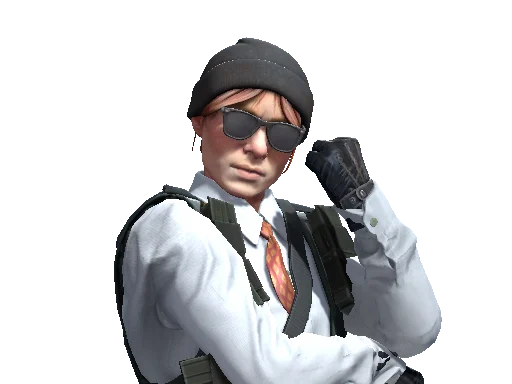A agente Getaway Sally foi lançada durante a operação Broken Fang, integrando a classe The Professionals, em 2 de dezembro de 2020.
Number K
O agente Number K foi lançado durante a operação Broken Fang, integrando a classe The Professionals, em 2 de dezembro de 2020.
Little Kev
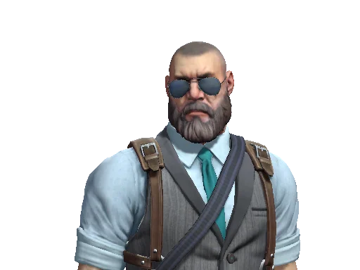O agente Little Kev foi lançado durante a operação Broken Fang, integrando a classe The Professionals, em 2 de dezembro de 2020.
Safecracker Voltzmann

A agente Safecracker Voltzmann foi lançada durante a operação Broken Fang, integrando a classe The Professionals, em 2 de dezembro de 2020.
Blueberries' Buckshot
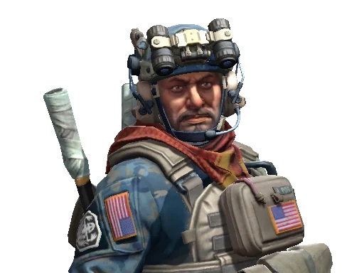O agente 'Blueberries' Buckshot foi lançado durante a operação Broken Fang, integrando a classe NSWC SEAL, em 2 de dezembro de 2020.
Cmdr. Mae 'Dead Cold' Jamison

A agente Cmdr. Mae 'Dead Cold' Jamison foi lançada durante a operação Broken Fang, integrando a classe SWAT, em 2 de dezembro de 2020.
Chem-Haz Specialist
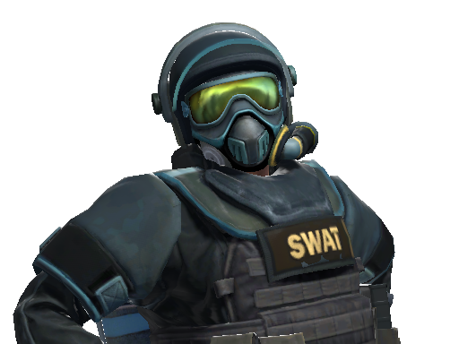O agente Chem-Haz Specialist foi lançado durante a operação Broken Fang, integrando a classe SWAT, em 2 de dezembro de 2020.
Street Soldier

O agente Street Soldier foi lançado durante a operação Broken Fang, integrando a classe Phoenix, em 2 de dezembro de 2020.
Bio-Haz Specialist

O agente Bio-Haz Specialist foi lançado durante a operação Broken Fang, integrando a classe SWAT, em 2 de dezembro de 2020.
Sergeant Bombson
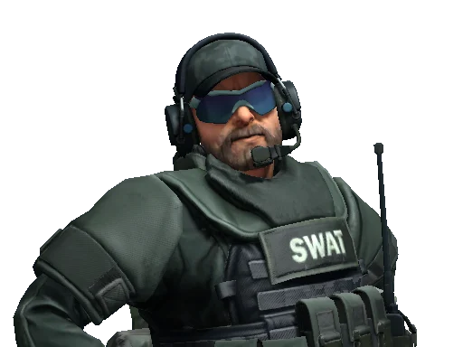O agente Sergeant Bombson foi lançado durante a operação Broken Fang, integrando a classe SWAT, em 2 de dezembro de 2020.
1st Lieutenant Farlow

A agente 1st Lieutenant Farlow foi lançada durante a operação Broken Fang, integrando a classe SWAT, em 2 de dezembro de 2020.
John 'Van Healen' Kask
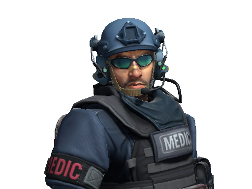O agente John 'Van Healen' Kask foi lançado durante a operação Broken Fang, integrando a classe SWAT, em 2 de dezembro de 2020.
'Two Times' McCoy

O agente 'Two Times' McCoy foi lançado durante a operação Broken Fang, integrando a classe TACP Cavalry, em 2 de dezembro de 2020.
Rezan the Redshirt

O agente Rezan the Redshirt foi lançado durante a operação Broken Fang, integrando a classe Sabre, em 2 de dezembro de 2020.
Dragomir
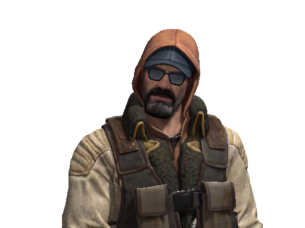O agente Dragomir foi lançado durante a operação Broken Fang, integrando a classe Sabre Footsoldier, em 2 de dezembro de 2020.